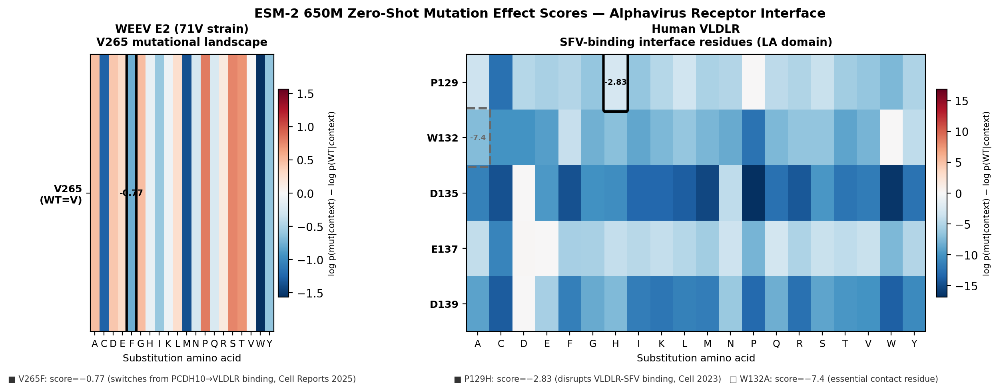

WEEV E2 V265F 受体向性切换的结构基础探索
AlphaFold3 两轮结构预测 + ESM-2 零样本突变打分
2026年5月
独立计算探索
参考：Byrd et al., Cell Reports 2025
GitHub Repository: 源码 / 数据 / 脚本 →
github.com/ian4681/weev-e2-receptor-analysis
研究问题
Cell Reports 2025 报道，WEEV E2 蛋白第265位单点突变（V265F）足以将病毒受体偏好
从 PCDH10 切换至 VLDLR。这一"单点氨基酸决定受体向性"的现象提示265位在结合界面上
具有关键地位。
核心问题：V265F 究竟是直接改变了结合界面，
还是通过变构机制间接切换受体偏好？能否在计算层面捕捉到这一界面差异？
关键发现
发现一：V265 不在直接接触界面。
265位残基在所有6组预测中接触概率均接近于零（WT 和 V265F 均如此），
提示 V265F 通过影响 E2 整体构象（变构机制）而非直接插入受体口袋来切换受体偏好。
发现二：AF3 存在模板偏差，结果不等于结合亲和力。
PDB 9L1N 是 WEEV E2 WT 的晶体结构，AF3 对 WT 有完整模板支撑，
导致 WT 系统性高于 V265F（R2轮 ΔipTM=0.110）。
这一差距反映模板偏差，不能直接解读为亲和力差异。
发现三：VLDLR 截短设计有效。
全长 VLDLR（873aa，8个LA重复）导致 AF3 信号稀释（ipTM=0.210）；
截短至 LA2-LA4 核心区（125aa）后，ipTM 升至 0.290，界面信号明显改善。
ESM-2 零样本打分 V265F = −0.77，与"功能改变而非丧失"的实验结果定性一致。
预测结果汇总
两轮共6组预测（R1 全长受体；R2 截短 VLDLR 至 LA2-LA4）：
| Job | 轮次 | ipTM | pae_AB (Å) | 备注 |
|---|
| WEEV_WT_VLDLR | R1 | 0.210 | 16.35 | 全长基线 |
| WEEV_V265F_VLDLR | R1 | 0.160 | 20.18 | |
| WEEV_WT_PCDH10 | R1 | 0.150 | 27.04 | 无模板，无界面信号 |
| WEEV_V265F_PCDH10 | R1 | 0.140 | 27.07 | |
| WEEV_WT_VLDLR_LA3 | R2 | 0.290 | 13.33 | 最优 — LA3截短 |
| WEEV_V265F_VLDLR_LA3 | R2 | 0.180 | 17.29 | |
ipTM >0.7 = 高置信；0.5–0.7 = 中等；<0.5 = 低置信。全部结果处于低置信区间，为探索性预测。
核心图表

图1：两轮6组预测的 ipTM（左）与 pae_AB（右）对比。
蓝色 = WT，红色 = V265F；深色 = 第二轮（LA3截短）。
VLDLR_LA3 WT 取得最高界面置信度（ipTM=0.290）；PCDH10 两组均无界面信号（约0.14）。

图2：WEEV E2 WT + VLDLR LA2-LA4 最优模型 PAE 矩阵（541×541 token）。
绿色虚线 = 链间分界（pos 416）；黄色虚线 = V265 位点。
对角线蓝色区域 = 各链内部折叠置信；界面区域（右上/左下）仍偏红，
但相较全长 VLDLR 有所改善。

图3：ESM-2 零样本突变打分热图。
WEEV E2 V265F = −0.77（功能改变而非丧失）；
VLDLR P129H = −2.83，W132A = −7.37（必需接触残基，极度不耐突变）。